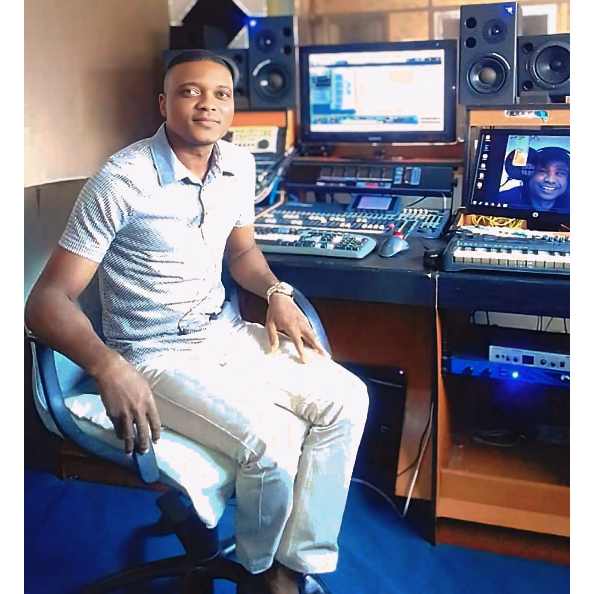

🔒This playlist is provided for online listening only in order to preserve and respect the rights of the artists / Cette playlist est proposée uniquement pour l’écoute en ligne afin de préserver et respecter les droits des artistes.
| Nº | 📅Année🕰️ | 🥁Style du son🕺 | 👨🎤Artiste & Titre🎙️ | 🔎Observation👁️ | Play All ✅ |
|---|---|---|---|---|---|
| 23 | 2026 | Tradi-Moderne | Theodule Dossou - Children Of Destiny | Enregistrement & Mixage & Mastering | |
| 22 | 2026 | Tradi-Moderne | Theodule Dossou - Yorek la beug | Enregistrement & Mixage & Mastering | |
| 21 | 2025 | Gospel | Hospice Gerard - hɛn lìn | Mastering | |
| 20 | 2025 | Tradi Gospel Medley | Hospice Gerard - Doo nú wé medley | Enregistrement & Mixage & Mastering | |
| 19 | 2023 | Tradi Medley | Ayodele - Okpe | Mixage & Mastering | |
| 18 | 2021 | Afrobeatpop | Almok – Nam'ablo | Mastering | |
| 17 | 2020 | Afrobeat | Akel – No Time | Enregistrement & Mixage & Mastering | |
| 16 | 2018 | Tradipop | Akel – Aunty | Enregistrement & Mixage & Mastering | |
| 15 | 2016 | Zouk | Judith – Je t’attendrai | Enregistrement & Mixage & Mastering | |
| 14 | 2016 | Zouk | Judith – Dans tes bras | Enregistrement & Mixage & Mastering | |
| 13 | 2016 | Salsa | Judith – Mi tcho mide | Enregistrement & Mixage & Mastering | |
| 12 | 2018 | Tradi-moderne | Roselyne Olory - Ahelou | Enregistrement & Mixage & Mastering | |
| 11 | 2018 | Funk | Roselyne Olory - Enfant | Enregistrement & Mixage & Mastering | |
| 10 | 2014 | Funk | P. Martins - Dagbe | Enregistrement & Mixage & Mastering | |
| 09 | 2015 | Funk pop | Masto Djee - Mawuena | Enregistrement & Pré Mixage | |
| 08 | 2015 | Bossa | Masto Djee - Mawuyin | Enregistrement & Pré Mixage | |
| 07 | 2012 | Funk pop | Don Metok - Adjolomi Senan | Enregistrement & Pré Mixage | |
| 06 | 2012 | Tradi Moderne | Don Metok - Hokpo | Enregistrement & Pré Mixage | |
| 05 | 2012 | Tradi Moderne | Don Metok - Sounou Takin | Enregistrement & Pré Mixage | |
| 04 | 2007 | Tradi Moderne | Zouley Sangare - Mami Yogo | Enregistrement & Edition | |
| 03 | 2007 | Tradi Moderne | Zouley Sangare - Suru | Enregistrement & Edition | |
| 02 | 2007 | Tradi Moderne | Zouley Sangare - Sombourou | Enregistrement & Edition | |
| 01 | 2007 | Tradi Moderne | Zouley Sangare - Gnidagbe | Enregistrement & Edition |

Infos...